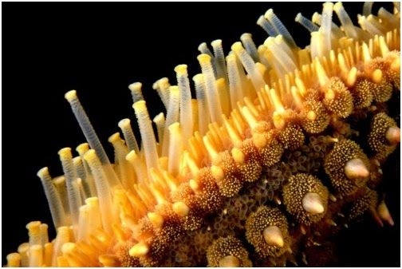

Los equinodermos (Echinodermata, del griego ekhino, "púa" y derma, "piel") son un filo de animales exclusivamente marinos y bentónicos (habitan el fondo de los ecosistemas marinos). Este grupo incluye seres como estrellas de mar, erizos de mar, pepinos de mar y lirios de mar.
Su nombre alude a su exclusivo esqueleto interno formado por placas
de carbonato de calcio llamadas osículos, las cuales les brindan
estructura y protección. El grado de desarrollo de estos elementos
varía según los grupos: en los erizos de mar los osículos están
fuertemente unidos entre sí y forman un caparazón rígido, mientras
que en los pepinos de mar los osículos son diminutos y se encuentran
dispersos en la dermis.
Con frecuencia presentan espinas fijas o móviles. Las estrellas y
los erizos de mar presentan, además, unas estructuras exclusivas en
forma de pinza, llamadas pedicelarios, que tienen diversas
funciones, como eliminar restos y larvas que intentan fijarse sobre
el cuerpo, defender al animal de los depredadores o participar en la
captura de presas.
Salvo las larvas, los equinodermos poseen simetría pentarradial, caso único en el reino animal, donde el cuerpo queda dividido en cinco regiones que se disponen alrededor de un disco central. Esta disposición simétrica les permite moverse y orientarse en cualquier dirección.
 Los equinodermos poseen un sistema complejo de conductos y reservorios llenos de líquido que accionan hidráulicamente unos salientes llamados pies ambulacrales, los cuales ayudan en la locomoción, el intercambio gaseoso, la alimentación, la fijación al sustrato y la percepción sensorial.
La alimentación de los equinodermos varía según la especie. Algunos son filtradores y se alimentan de partículas en suspensión en el agua, como plancton y detritos. Otros son carnívoros y se alimentan de moluscos, crustáceos u otros invertebrados marinos. Algunos equinodermos, como los erizos de mar, tienen una estructura bucal especializada que utilizan para raspar algas u otros organismos adheridos a las rocas.
Los equinodermos desempeñan un papel ecológico importante en los ecosistemas marinos. Algunas estrellas de mar se alimentan de moluscos que pueden convertirse en plagas, ayudando a mantener un equilibrio en las poblaciones de estos organismos. Además, los erizos de mar desempeñan un papel vital en la salud de los arrecifes de coral al controlar el crecimiento de algas y permitir que los corales prosperen.